| 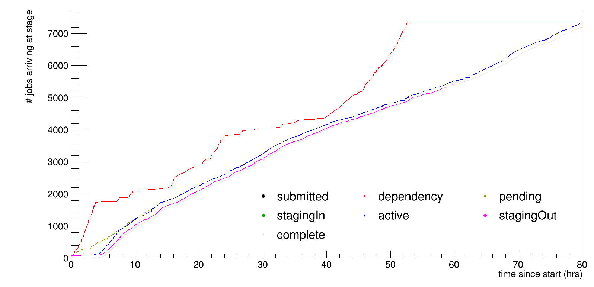 |
Each job has 7 stages: submit, dependency, pending, stage in, active, stage out, complete. The number of jobs that have reached each stage since launch is shown. |
| 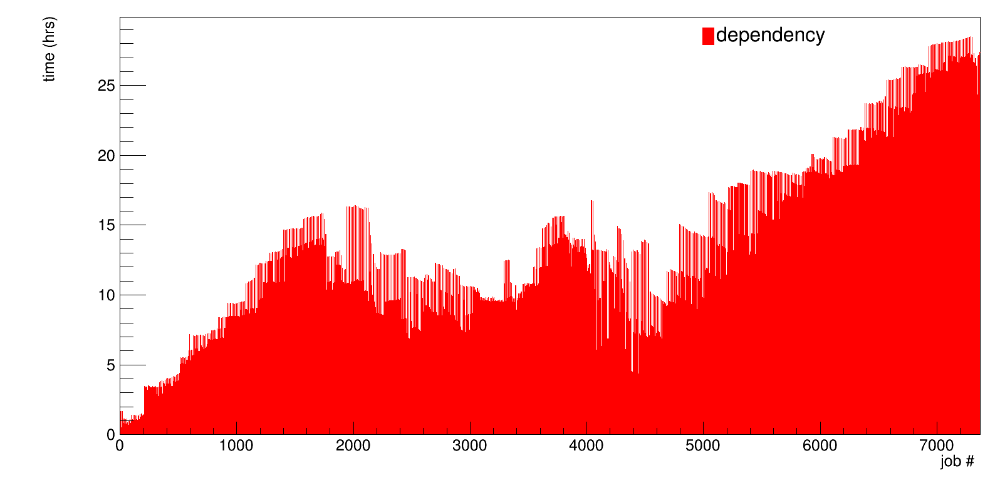 | 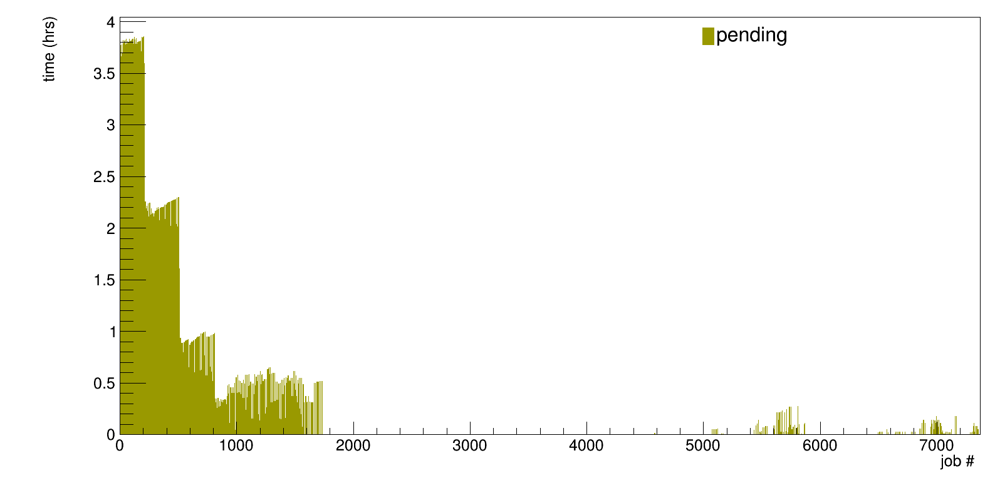 | 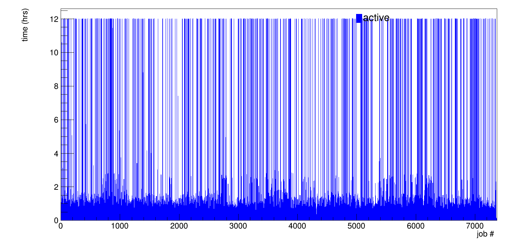 |
Time spent in dependency (waiting for input file to be transferred to cache disk) for each job |
Time spent in pending (waiting for slot to open on cluster nodes) for each job |
Time spent in active (actual processing of job) for each job |
| 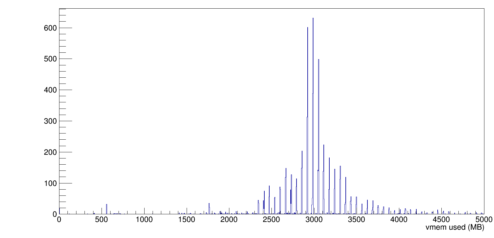 | 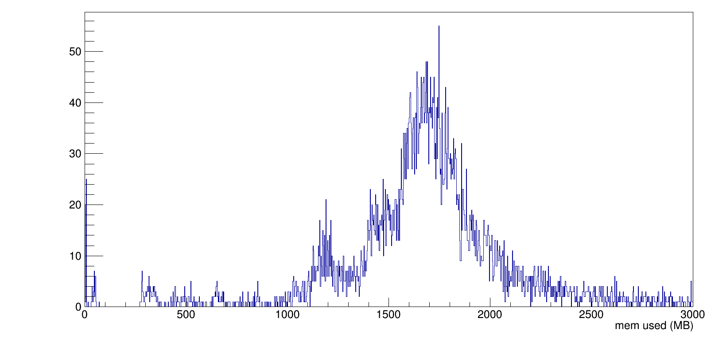 |
| 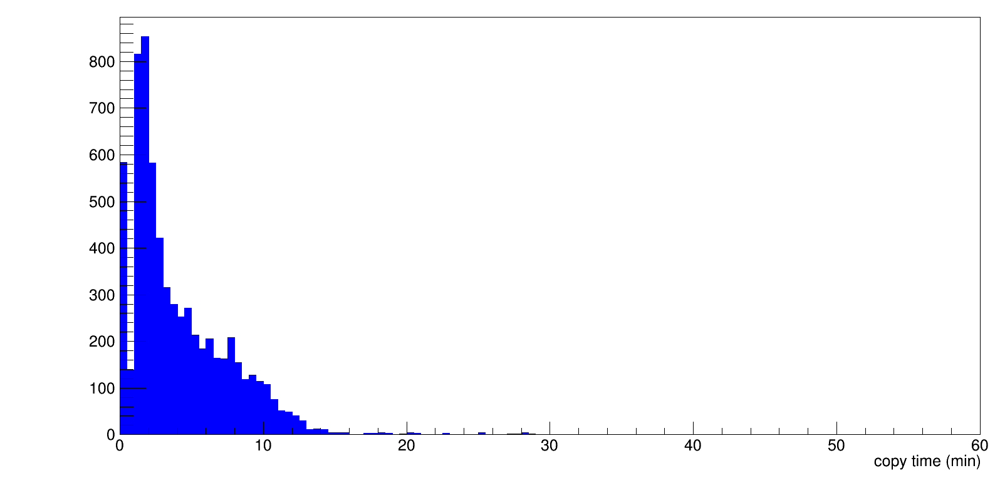 | 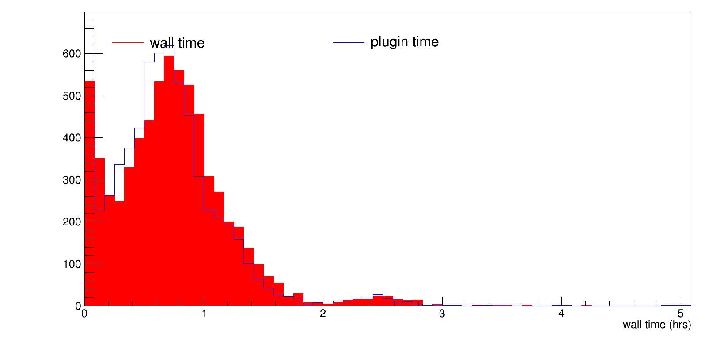 |
Time to copy input file (typically 20GB for fall 2014 run) from cache disk to working node. |
Wall time spent for each job. |
| 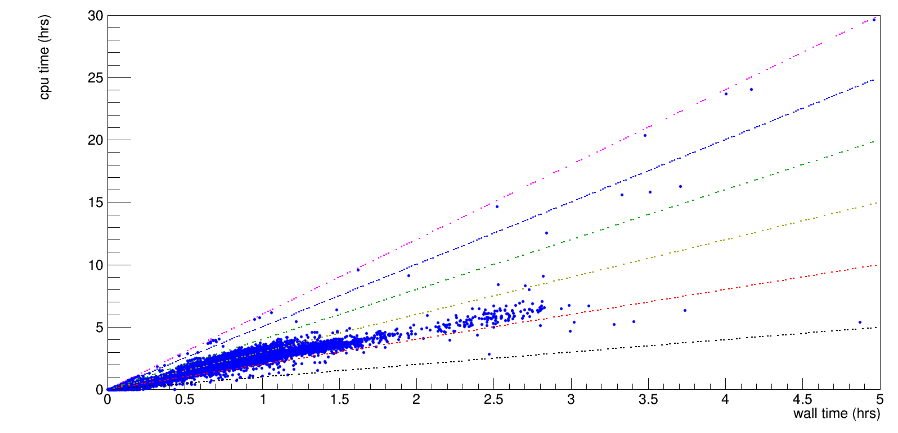 | 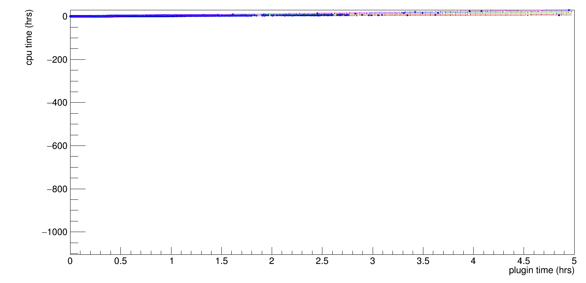 |
CPU time vs wall time. CPU time is the sum of all threads used, and ideally should be N times the wall time, where N is the number of threads used. |
CPU time vs time actually spent to process plugins. The plugin times are given by the time command when running the plugins. |
| 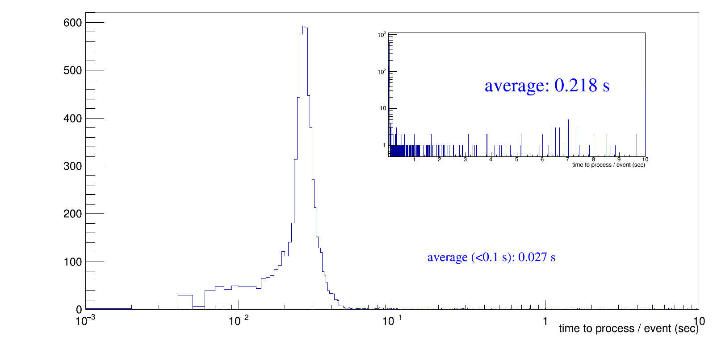 |
Distribution of time to process plugin divided by number of events for each job. Note the log scale on the horizontal axis. Since some jobs get stuck at a specific event, these jobs will have a much longer average processing time (full scale up to 10 s shown in inset). For the overall average, we use only jobs that had an average processing time of less than 0.1 s / event. Also note that we use multithread processing for these jobs, so that the processing time / event / thread is higher. |